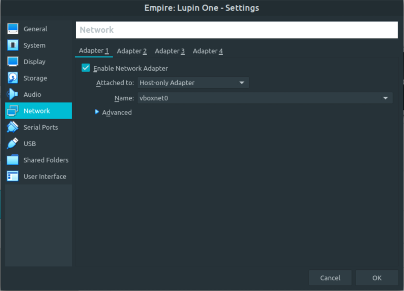
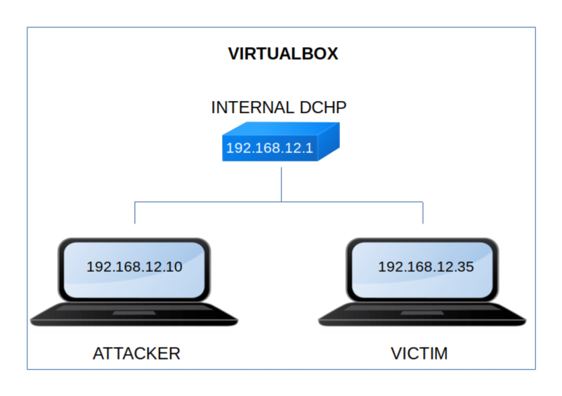

Empire: Lupin One
▸ Empire: Lupin One
▸ 1. Scan Network
▸ 2. Finding Services and Ports
▸ 3. Enumerate
▸ 3.1 Fuzz to gain some additional information
▸ 3.2 Get private SSH key
▸ 4. Exploitation
▸ 4.1 Get hash from SSH key
▸ 4.2 Connect via SSH
▸ 4.3 Get the shell of the user "arsene"
▸ 5. Privilege Escalation (Catch the flag)
Difficulty: Medium.
Flag: 1 flag.
Learning:
• Reconnaissance
Scan Network
Find services
• Enumerate
Fuzzing with ffuf
Decode Base58 string
• Exploitation
Get hash from SSH key with ssh2john
Find writable files
Add bash shell to Python file
• Privilege Escalation
Gtfobins pip command to get “root”
• Download (Mirror): https://download.vulnhub.com/empire/01-Empire-Lupin-One.zip
• Download (Torrent): https://download.vulnhub.com/empire/01-Empire-Lupin-One.zip.torrent
Install the machine on VirtualBox:
1. Download the file and extract it.
2. On Virtualbox choose File->Import Appliance.
3. Select the file “ova”.
4. Accept to import.


Watch your Machine IP.
$ ifconfig
Output:

Diagram
